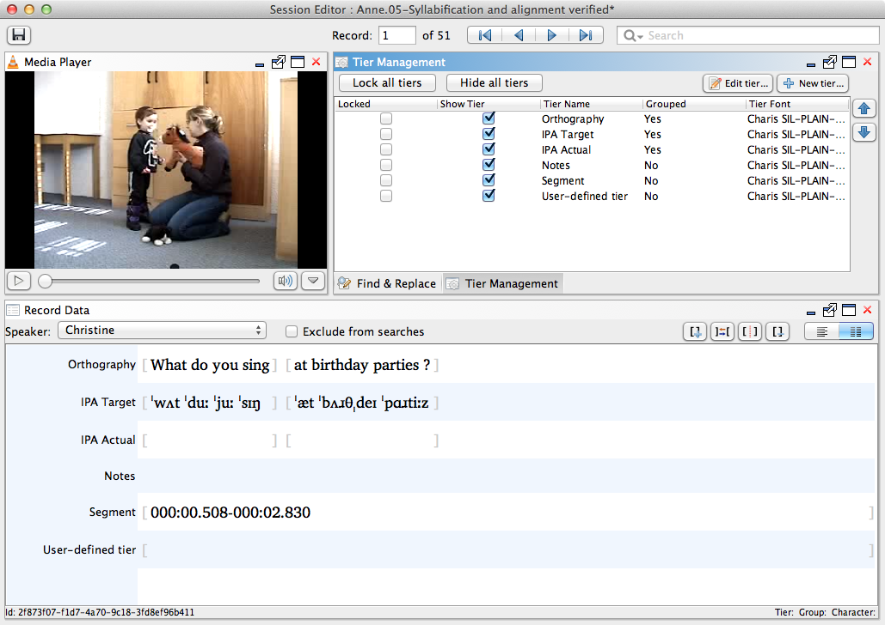

Tier Management
The Tier Management view allows for modification and locking of session tiers.Watch the video below for an introduction to the Tier Management view.
Actions
Add Tier
Create a new user-defined tier.
-
Click on the New tier button in the top right corner of the view.
This action will generate a dialog prompting you specify details about the new tier. -
Enter a name for the new tier. If the new tier should be a group aligned tier, select the Grouped (word-aligned) check box. Select an appropriate font for the new tier, or click the Use default font button to choose the default editor font. Click Ok.
The new tier will show up at the bottom of each record.

-
To edit the font for a user-defined tier, select it from the list of tiers in the Tier Management view and click the Edit tier... button at the top right corner, or right-click on a tier and choose Edit tier <tier name>. Select the new font options and click Ok.
That tier will reflect your new font choice in the Record Data view.
Note: To reset the tier font to the default, right-click (CTRL+click) on the tier and choose Reset font from the context menu.
Hide Tier
Remove Tier
Remove an existing user-defined tier.
-
Select an existing user defined tier and press Delete or Backspace, or right-click on a tier and choose Delete tier <tier name>.
This action will generate a dialog asking you to confirm that you would like to delete the tier and informing you that this action cannot be undone.Note: Default Phon tiers (such as Orthography, IPA Target, Notes, etc.) cannot be deleted. If you do not wish to use one or more of these tiers, you can make them invisible following instructions at Hide Tier. -
If you are unsure about removing the tier, click Cancel. If you would like to continue and remove the tier and all its contents, click Ok.
The user defined tier will no longer appear in the Tier Management or Record Data views for this session.
Edit Tier
Select which tiers are visible in Record Data and change the order in which they appear.
-
Click on the check box to the left of each tier, under Show Tier, to select or de-select the tier for visualization.
Selected tiers will be visible in the Record Data view, de-selected tiers will not be visible.Note: To hide or show all tiers, use the Hide all tiers/Show all tiers button. -
Select any tier which you would like to reorder and use the green up and down arrows to the right of the tier names to change its position within the list.
The tiers will appear in the revised order in the Record Data view. -
Repeat Step 2 for any tiers you would like to reorder.
Lock or Unlock Tiers
Lock or unlock tiers against editing.
-
To lock a tier, select the check box to the left of its name under the Locked column. To unlock a tier, de-select the check box.
Selected tiers will be locked against editing in the Record Data view.Note: To lock or unlock all tiers, use the Lock all tiers/Unlock all tiers button.